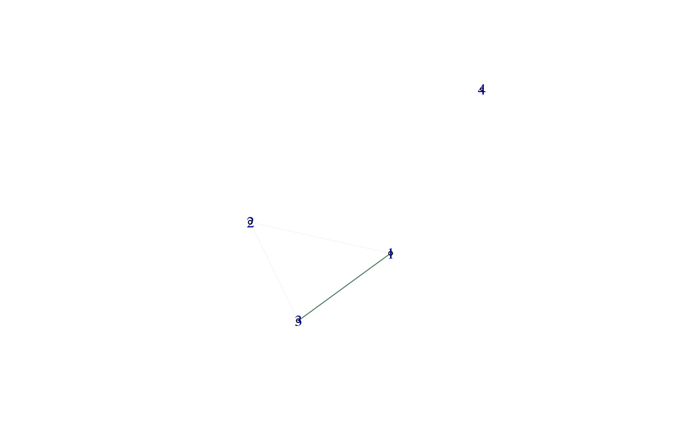

Threshold the results from a differential co-expression analysis and create a differential network.
dcNetwork(dcscores, dcpvals = NULL, thresh = NULL, ...)
| dcscores | a matrix, the result of the |
|---|---|
| dcpvals | a matrix or NULL, raw or adjusted p-values resulting from
|
| thresh | a numeric, threshold to apply. If |
| ... | see details |
an igraph object, representing the differential network. Scores are added as edge attributes with the name 'score'
No extra arguments required for this function. The ellipsis are used to allow flexibility in pipelines.
#create data set.seed(360) x <- matrix(rnorm(120), 4, 30) cond <- rep(1:2, 15) #perform analysis - z-score zscores <- dcScore(x, cond) pvals <- dcTest(zscores, emat = x, condition = cond) pvals <- dcAdjust(pvals, p.adjust, method = 'fdr') ig <- dcNetwork(zscores, pvals, 0.1) #perform analysis - DiffCoEx dcscores <- dcScore(x, cond, dc.method = 'diffcoex') ig <- dcNetwork(dcscores, thresh = 0.001) #plot the resulting differential co-expression network igraph::plot.igraph(ig)